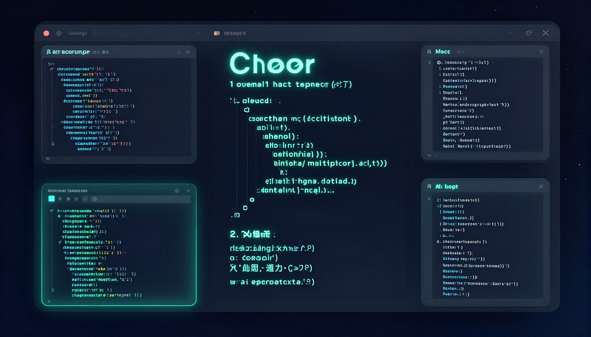

Best AI Coding Tools 2026: Cursor vs Copilot vs Replit vs Codeium

The Best AI Coding Tools Compared
AI coding tools have transformed software development. In 2026, developers have several excellent options, each with different strengths. We tested the top four on real projects to find the best tool for every type of developer.
| Feature | Cursor | Copilot | Replit | Codeium |
|---|---|---|---|---|
| Code Completion | ⭐⭐⭐⭐⭐ | ⭐⭐⭐⭐⭐ | ⭐⭐⭐⭐ | ⭐⭐⭐⭐ |
| Chat/Q&A | ⭐⭐⭐⭐⭐ | ⭐⭐⭐⭐ | ⭐⭐⭐⭐ | ⭐⭐⭐ |
| Multi-file Edits | ⭐⭐⭐⭐⭐ | ⭐⭐⭐ | ⭐⭐⭐⭐ | ⭐⭐ |
| IDE Integration | ⭐⭐⭐⭐⭐ | ⭐⭐⭐⭐⭐ | ⭐⭐⭐⭐ | ⭐⭐⭐⭐⭐ |
| Free Tier | Yes | Students only | Yes | Yes (unlimited) |
| Price | $20/mo | $10/mo | $25/mo | $15/mo |
1. Cursor — Best Overall
Cursor takes the top spot because of its deep integration of AI into the coding workflow. Features like Composer (multi-file generation), intelligent tab completion, and codebase-wide chat make it the most powerful AI coding tool available.
See our full Cursor review for detailed analysis.
2. GitHub Copilot — Best for Inline Suggestions
Copilot remains the king of inline code suggestions. If you want fast, accurate completions as you type without changing your IDE, Copilot is the best choice. See our full Copilot review.
3. Replit AI — Best for Browser-Based Coding
Replit combines a browser IDE with AI assistance. It's perfect for quick prototypes, learning to code, or working from any device without setup. The AI features are solid and improving rapidly.
4. Codeium — Best Free Option
Codeium offers unlimited free AI code completions, making it the best free alternative. Quality is slightly below Copilot, but the price (free) makes it an excellent starting point.
Our Recommendations
Professional developers: Cursor Pro ($20/mo) — the most powerful AI coding experience
Teams using VS Code: GitHub Copilot ($10-19/mo) — seamless integration
Students and hobbyists: Codeium (free) — unlimited completions at $0
Browser-based development: Replit (free tier available) — code anywhere